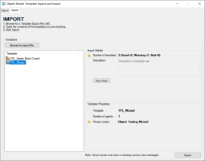

Important: You must shut down your SmartUI Server before you can import templates.
Note: These templates are imported into a unique folder, which also specifies the date and time of the import, so they will not overwrite existing templates.
- Select the Import tab.

- Click the Browse for export file button and browse for and select the required .TEF file then click Open.
- In the left-panel, the Template list contains the names of the templates within the selected export file.
- Tip: You can view the source path of an exported template by hovering over its name in the list.
- Note: If you hover over the Template name then you can preview the Primary wizard.
- If you select an exported template, then the Templates Details section appears in the right-panel and displays a summary of its configuration and displays any detected warnings or errors.
- You should analyse the templates contained in the file to determine that you are importing the required wizards.
- In the right-panel, the Import details section displays:
- the Number of templates contained in this export file and lists the import status of them, as follows:
- Good: all is OK with importing these templates. For example, no configured elements already exists.
- Warning: a non-critical issue was found when importing these templates. For example, a configured element already exists, such as the primary wizard.
- Note: In the case of an existing configured element, this element will not be replaced!
- Bad: when one or more of these templates cannot be correctly referenced in the export file. For example, typically due to file corruption, then these templates cannot be imported at all.
- the Description which provides a detailed description of these exported templates, so that you can determine if you have selected the correct templates to import.
- when an incompatible SmartUI Server version is detected, which prevents these templates being imported, the Source and Destination Server section is then displayed to show the server details and versions. Normally, you may click the Show more button to view this information.
- Click the Import button and click Yes to confirm the import.
- Note: These templates will be imported into your Active Configuration, which you can check via the Configuration page of your SmartUI Config Editor.
- Note: These templates will be imported into a unique folder, which also specifies the date and time of the import, so they do not overwrite any existing templates that have the same name.
- At the end of this process, the Import results are displayed, listing all the events related to this import.
- Note: You should not see any errors in these results. However, if you do, you can attempt to fix them. Depending upon their severity, you should delete this import folder and attempt to reimport the templates.
- Click the Open the Templates folder in Windows Explorer button in the top right corner of the utility to view the folder of these newly imported templates, which uses this name format:
- “IMPORT_# templates_date_time.tef”, where # is the number of templates that are exported, and data and time specify the date and time of the import.


 Adroit Utilities on the Desktop and then select this utility from this menu.
Adroit Utilities on the Desktop and then select this utility from this menu.
 structure in the System and User folders
structure in the System and User folders  to assist you in locating these problematic templates.
to assist you in locating these problematic templates. . You may then enter a Description for these exported templates. The description is displayed when a user attempts to import the templates.
. You may then enter a Description for these exported templates. The description is displayed when a user attempts to import the templates. Export one or more of your existing Object Model Templates
Export one or more of your existing Object Model Templates